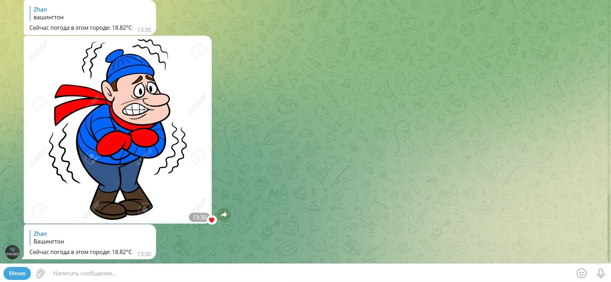
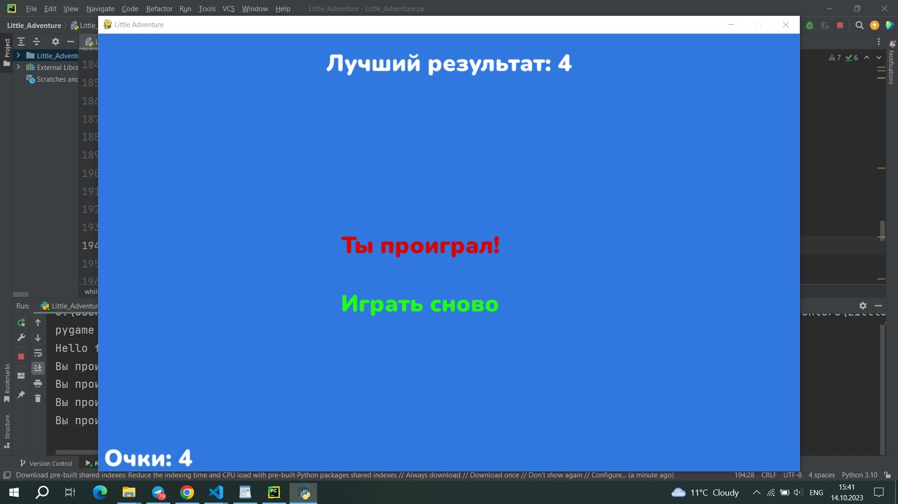
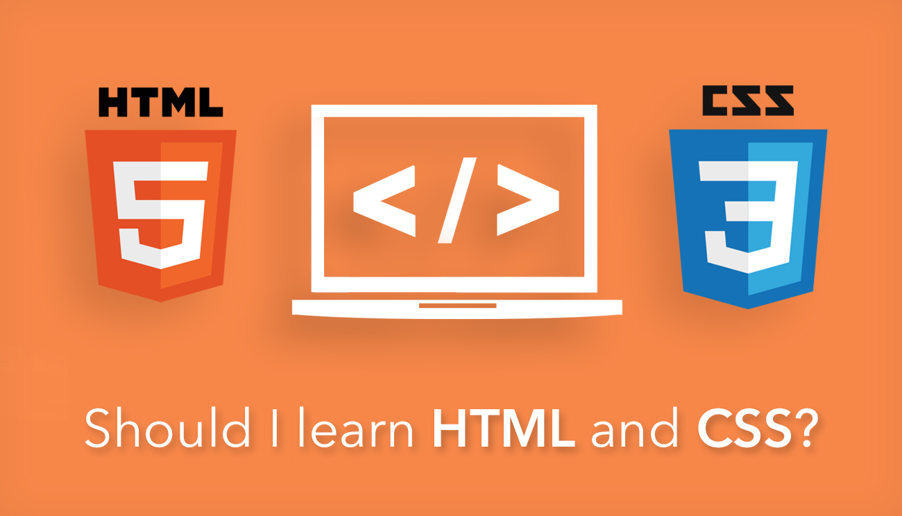

Для быстрого перемещения
Мои опыт в программирование начался с того что я посмотрел видео от Хауди-хо про питон за 1 час,меня это вдохновила ведь все за 1 час он обьяснил основы основ и создал эхо бота в телеграмме
В последуещим изучении я начил плэйлист по Python айти прогера,ну ещё я до этого учил Python по sololearn,и после того как я завершил плэйлист по питону,я начил плэйлист по телеграмм ботам у того же айти прогера,вот список ботов которых я делал
Пример работы погодного бота:
После того как я попробовал разрабатывать тг ботов,я решил попробовать GameDev,и самый быстрый путь к этому был через тот же пайтон,и я начил плэйлист по pygame от itproger
и сам плэйлист оказался не плохим,но он точно не самый лучший и я решил сам добавит различные функции в эту игру при помощи своей головы+чат гпт
И вот по итогу что вышло:
Экран проигрыша:
Ну и последние что я смог изучить за последние 4 месяца,эта самые основы html и css,благодаря которым я и написал этот маленький сайт.Изучал я их по видеокурсу,и вроде он был достаточно хорошим,в будущем продолжу изучать html чтобы написть сайт получше этого
